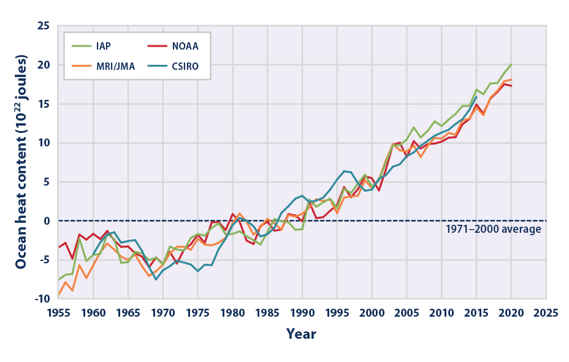
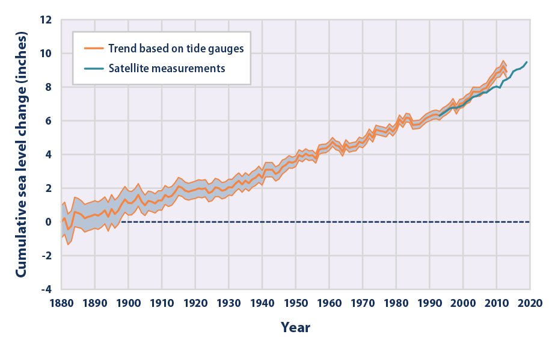

L’océan joue un rôle central dans la régulation du climat de la Terre.
Les gaz à effet de serre emprisonnent plus d'énergie solaire donc les océans absorbent plus de chaleur, ce qui entraîne une augmentation des températures de surface de la mer et une élévation du niveau de la mer. Le cinquième rapport d'évaluation publié par le Groupe d'experts intergouvernemental sur l'évolution du climat (GIEC) en 2013 a révélé qu'il avait jusqu'à présent absorbé 93% de l'énergie supplémentaire de l'effet de serre renforcé, le réchauffement étant maintenant observé à des profondeurs de 1000 m. Les changements des températures et des courants océaniques provoqués par le changement climatique entraîneront des modifications des régimes climatiques dans le monde. Par exemple, des eaux plus chaudes peuvent favoriser le développement de tempêtes plus fortes sous les tropiques, ce qui peut causer des dommages matériels et la mort. Les effets associés à l'élévation du niveau de la mer et aux ondes de tempête plus fortes sont particulièrement pertinents pour les communautés côtières.
Bien que les océans contribuent à réduire le changement climatique en stockant de grandes quantités de dioxyde de carbone, des niveaux croissants de carbone dissous modifient la chimie de l'eau de mer et la rendent plus acide. L'acidité accrue des océans rend plus difficile pour certains organismes, comme les coraux et les crustacés, la construction de leurs squelettes et coquillages. Ces effets, à leur tour, pourraient modifier considérablement la biodiversité et la productivité des écosystèmes océaniques.
Index
Quatre analyses indépendantes montrent que la quantité de chaleur stockée dans les océans a considérablement augmenté depuis les années 1950. Le contenu thermique des océans détermine non seulement la température de surface de la mer, mais affecte également le niveau de la mer et les courants.

En moyenne sur tous les océans du monde, le niveau de la mer a augmenté à un rythme d’environ 1.524cm par décennie depuis 1880. Le taux d’augmentation s’est accéléré ces dernières années à plus d’un pouce par décennie. Les changements du niveau de la mer par rapport à la terre varient selon les régions. Sur la côte américaine, le niveau de la mer a le plus augmenté le long de la côte médio-atlantique et de certaines parties de la côte du golfe, où plusieurs stations ont enregistré des augmentations de plus de 20.32cm entre 1960 et 2020. Le niveau de la mer a diminué par rapport à la terre dans certaines parties de Alaska et Pacifique Nord-Ouest.

L'océan est devenu plus acide au cours des dernières décennies en raison de l'augmentation des niveaux de dioxyde de carbone atmosphérique, qui se dissout dans l'eau. Une acidité plus élevée affecte l'équilibre des minéraux dans l'eau, ce qui peut rendre plus difficile pour certains animaux marins la construction de leurs squelettes ou coquilles protecteurs
Cette figure montre la relation entre les changements des niveaux de dioxyde de carbone dans l'océan (mesurés dans la colonne de gauche en tant que pression partielle - une façon courante de mesurer la quantité d'un gaz) et l'acidité (mesurée en tant que pH dans la colonne de droite).
Mais tout n’est pas perdu. Les océans peuvent aussi être une ressource inestimable non seulement pour stocker, mais aussi pour enlever le CO2. Une étude sur les loutres de mer a montré qu’il y a des manières inattendu mais très efficace pour éliminer du carbone. Loutres de Mer
to go back to any previous part, use the following links: